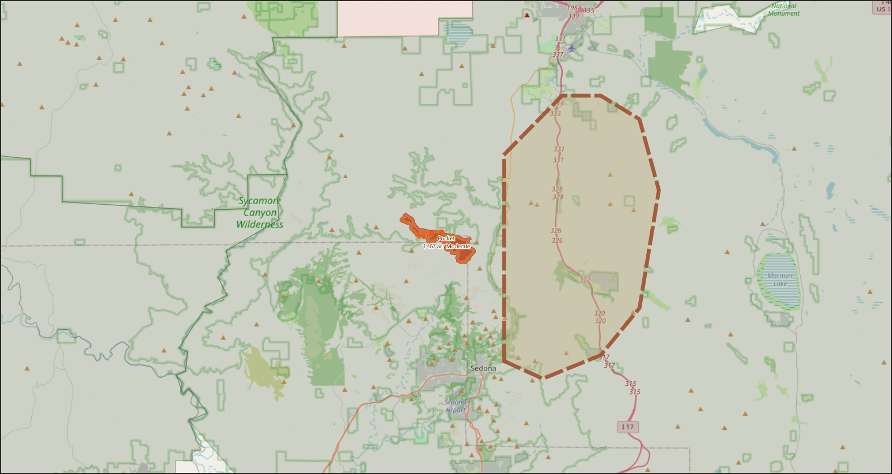

The Pocket Fire, burning in the rugged Red Rock–Secret Mountain Wilderness seven miles north of Sedona, grew overnight to 1,467 acres Friday morning with zero percent containment — up from 1,187 acres the night before. Weather conditions that suppression crews have been dreading all week are now arriving: the National Weather Service issued a Red Flag Warning running Friday through Sunday, with gusts forecast to reach 45 miles per hour, humidity diving below 15 percent, and no rain in sight.
The fire was first spotted around 5:30 p.m. on Friday, June 19, near the Coconino–Yavapai county line northwest of Indian Gardens. Its cause remains officially undetermined. Within hours, Coconino County issued a GO evacuation order for all Oak Creek Canyon residents and visitors from Sedona to Forest Highlands, and Sedona police sealed northbound State Route 89A at Owenby Way.
"The potential for growth continues to be very high. Steep, difficult terrain prevented ground support — the fire remains very active." — Southwest Complex Incident Management Team 2
Southwest Area Incident Management Team 2 assumed command of the fire, inheriting a battlefield defined by geography. The Mogollon Rim's broken terrain — sheer canyon walls, talus slopes, and choke points in continuous fuel — has consistently prevented crews from mounting a direct attack without undue risk to life. Aircraft have been the primary weapon: 90 percent of the fire area has been treated with aerial retardant drops, with six helicopters staging out of Sedona Airport around the clock. The historic East Pocket Lookout, a beloved landmark on the rim above the canyon, has been successfully protected.
⚑ Red Flag Warning — What It Means This Weekend
Red Flag conditions occur when fire can spread catastrophically fast. This weekend's forecast meets all three trigger criteria simultaneously:
- Relative humidity at or below 15% for three or more hours
- Sustained winds 20+ mph, gusts exceeding 35–45 mph
- 10-hour fuel moisture at 7.8% — drier than kiln-dried framing lumber
The incident management team's primary concern: winds pushing the fire north up to the rim of the San Francisco Plateau, where wind-carried embers could ignite spot fires beyond current perimeter lines.
Operations on the Ground
Crews spent Thursday widening and reinforcing containment lines in preparation for the weekend's weather. On the north side of the fire, mechanical equipment extended breaks toward the plateau rim. To the south, scouts identified a natural choke point where two rocky ridges nearly converge, cutting a saw line across the gap — a potential helicopter-supported suppression point if the fire pushes that direction.
Wednesday night's firing operations — intentionally set burns to deprive the main fire of fuel — produced a dramatic increase in smoke visible across the Verde Valley. A shift in southerly winds that same evening pushed that smoke directly into Sedona, obscuring the iconic red rock formations with a thick haze and filling the city's streets with the smell of burning pinyon and juniper. Wednesday's brief rain had little measurable effect on the fire's advance.

▲ Map rendered live from QGIS — Pocket Fire perimeter (orange), SET evacuation zone (dashed), MODIS 48-hr thermal hotspots (triangles), Coconino National Forest (green). Sedona visible bottom-center. SR-89A runs north–south through Oak Creek Canyon. Source: NIFC / MODIS / USFS / OpenStreetMap · June 26, 2026
Evacuations & Community Impact
Evacuation orders were downgraded earlier this week — around June 22–23 — from GO to SET for Oak Creek Canyon residents, a cautious improvement that nonetheless leaves the canyon largely sealed to the public. State Route 89A remains closed to non-residents in both directions between mileposts 374 and 397. Residents returning to their properties must present proof of identity and residency at checkpoints. Coconino County Sheriff's deputies are staffing the highway closure around the clock.
An emergency shelter operated by the American Red Cross Arizona remains open at Sedona Red Rock High School, 995 Upper Red Rock Loop Road. High Country Humane has partnered with Coconino County to temporarily house small pets for shelter residents. All campgrounds, day-use areas, and trails within Oak Creek Canyon remain closed, as does Lake Mary, which has been restricted to support helicopter water operations.
Sedona's interim Mayor Holli Ploog visited the fire camp on Monday, June 22, and addressed crews personally. "There are 432 selfless individuals currently working tirelessly to suppress this fire and ensure it does not spread south to Sedona," she said at that time, speaking also to the deep historical significance of Oak Creek Canyon to the native tribes and pioneer families who shaped the region. Personnel have since grown to 969 as the incident escalated through the week.
A public meeting, originally scheduled for Saturday in Sedona, has been moved to 7 p.m., Monday, June 29, at Sedona Red Rock Middle School and High School, 995 Upper Red Rock Loop Road. The meeting will also be live-streamed on the Coconino National Forest's Facebook page.
Active Closures & Orders — June 26, 2026
- SR-89A closed to public (mileposts 374–397) — residents with proof of residency only
- Woody Mountain Road (Forest Road 231) closed
- Oak Creek Canyon — residents only, proof of identity required
- All Oak Creek Canyon campgrounds, day-use sites, and trails closed
- Lake Mary closed to recreation (helicopter water ops)
- Coconino National Forest closure order in effect around fire perimeter
- Temporary drone flight restriction active — do not fly
Fuel Conditions & Historical Context
The Pocket Fire burns primarily in timber and brush with a grass-and-understory fuel model — the dense, layered vegetation of a canyon system that has absorbed years of fire-suppression policy. The 10-hour fuel moisture reading of 7.8 percent recorded Thursday afternoon underscores just how combustible the landscape has become: kiln-dried framing lumber, by comparison, holds 12–19 percent moisture. Under Red Flag conditions, these fuels can carry fire faster than crews can reposition.
The fire's position in the Red Rock–Secret Mountain Wilderness adds a layer of legal and logistical complexity. Mechanized equipment faces restrictions in designated wilderness areas, limiting the tools available to crews. The terrain itself — the same dramatic escarpments that draw millions of visitors to Sedona each year — becomes an adversary when it channels wind, hides spot fires, and prevents vehicle access.
Incident Data
| Field | Value |
|---|---|
| Fire Name | |
| Unique ID | 2026-AZCOF-000781 |
| Discovery Date | June 19, 2026 (~5:30 p.m. MST) |
| Location | 7 miles north of Sedona, AZ |
| County | Yavapai / Coconino |
| Daily Acres | 1,467 |
| Contained | 0% |
| Personnel | 969 |
| Injuries | Not confirmed in official releases |
| Structures Destroyed | None reported |
| Cause | Undetermined |
| Primary Fuel | Timber / Grass & Understory |
| GACC | Southwest Coordination Center (SWCC) |
| Management Team | SW Complex Incident Management Team 2 |
| Severity Class | HIGH (GIS analysis) |
Fire Timeline
Resources & Emergency Contacts
Data sources: NIFC WFIGS Active Wildfires · Arizona Emergency Information Network (ein.az.gov) · Coconino National Forest · MODIS Thermal (48-hr) · U.S. Census TIGER 2023 · OpenStreetMap · ArcGIS Pro 3.5 live session · QGIS 4.0. Map generated June 26, 2026 via QGIS MCP bridge. Incident data pulled via ArcGIS Pro MCP bridge. All acreage and containment figures reflect morning briefing of June 26, 2026.